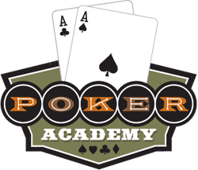

Part 2: Strategic Concepts

Up until now we have been focusing on the rules of Texas Hold'em. This section will cover some of the strategy in playing the game. Texas Hold'em has not been "solved", meaning there is no definitive way to play the game to guarantee that you have an edge against all types of opponents.
This makes the game fun to play but also means that this section is advice instead of hard and fast guidelines on how to play. One of the key features Poker Academy provides you with is a poker playground where you can try out different strategies and see how they fare against various opponents.